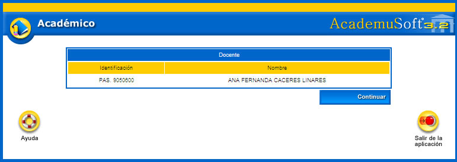
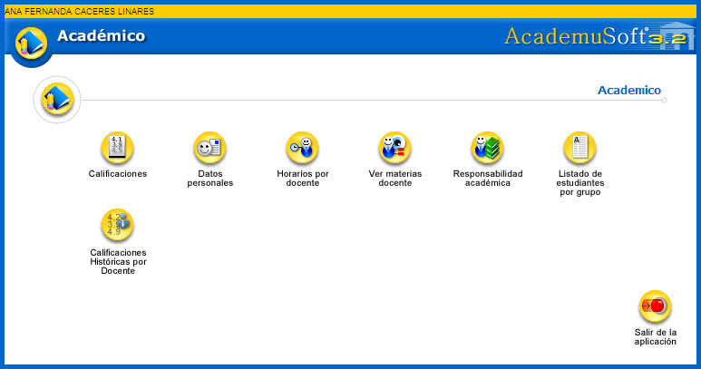

Bienvenidos al módulo del docente, ha sido creado para ofrecer un ambiente que permita desarrollar consultas de los datos personales, horario de las materias asignadas, consultar materias y el listado de estudiantes matriculados en ellas.
Proporciona la posibilidad de ingresar con un usuario y contraseña propios, visualizar la información personal, actualizarla cuando se crea conveniente a través del administrador de la dependencia encargada de este proceso, verificar la carga académica, conociendo las actividades asociadas con su docencia directa de formación e investigación, actividades de proyección social y académico administrativas.
Esto con la necesidad de incorporar incentivos que favorezcan la generación de una nueva cultura académico-docente, generando una productividad intelectual que beneficie las comunidades directamente involucradas con las acciones sociales por él desarrolladas.
Cuenta con el ingreso de las nota, habilitaciones y autorización de supletorios en línea, convirtiéndose en una herramienta estratégica para agilizar la gestión de la calificación de las evaluaciones programadas por la institución educativa, cálculo de definitivas y promedios semestrales por materias, grupos y programas académicos. Busca a través de su implementación y puesta en marcha ofrecer un producto efectivo, aplicando un proceso que conduce a un resultado de alta calidad que colme las necesidades de quienes se beneficiarán con el uso del sistema.
Una vez el docente se ha logueado con su usuario y contraseña, se desplegará la interfaz del Vortal que muestra el siguiente ícono: por el cual va a ingresar el profesor.
Una vez se da clic sobre el ícono se despliega una interfaz en la cual se muestra el nombre completo más la identificación que concatena el tipo y número de documento. Posteriormente hay que hacer clic sobre la opción Continuar.

El sistema despliega una interfaz en la cual se muestran las funcionalidades que el docente tiene disponibles desde su entorno.
